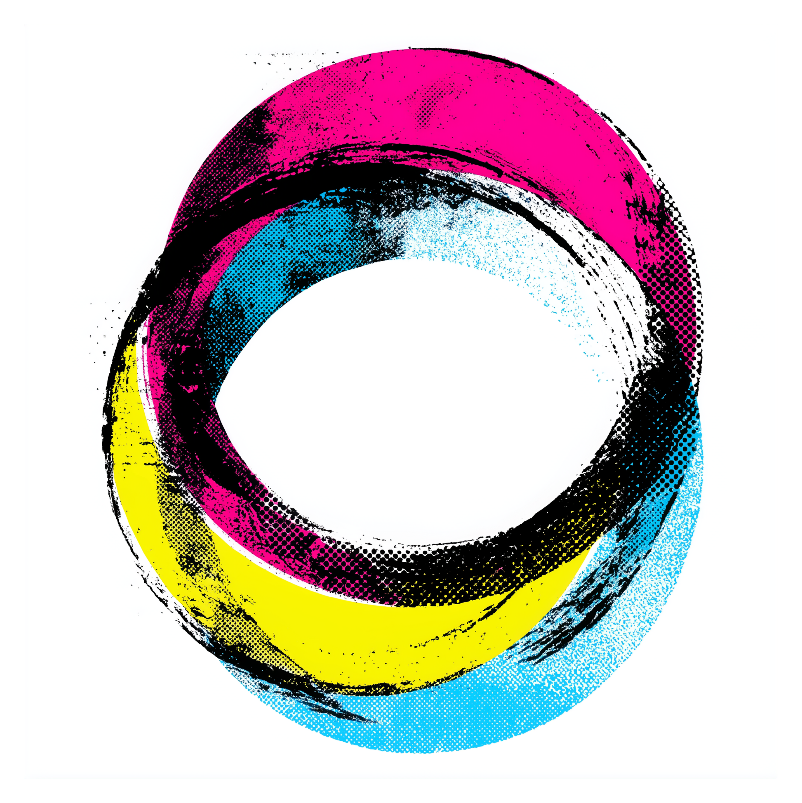

Futura Biennale Schöneweide · 202715 Fragen · 7 Typen · 3 Minuten. Das Zukunftsquiz der Futura ist mehr als ein Spiel — es ist ein Spiegel der eigenen Haltung zu Umbruch, Risiko und neuen Möglichkeiten. Mit Profildiagramm im Radar-Chart, drei Deutungsachsen und Zukunfts-Dating für Typ-Kompatibilität. Mobile-optimiert, ohne Login, datensparsam.
Drei Minuten genügen. Das Quiz läuft auf jedem Smartphone, ohne Anmeldung. Nach den 15 Fragen bekommst Du Deinen Hauptzukunftstyp, ein Radar-Profil über alle sieben Typen und ein Zukunfts-Dating mit dem Typ, der am besten zu Dir passt.
Kein Login, keine Daten gespeichert, kein Tracking. Nur Du, fünfzehn Fragen und ein Spiegel Deiner Zukunftshaltung. Per QR-Code oder direkt im Browser.
Quiz starten →Jeder Typ ist eine eigene Art, mit Umbruch umzugehen. Die meisten Menschen tragen mehrere in sich — das Quiz zeigt, welcher Typ in Dir den Ton angibt und welche Typen mitschwingen. Keine Wertung, kein Schubladen-Denken: Sieben Stimmen, von denen wir alle brauchen.
Du blickst hoffnungsvoll nach vorn und willst nicht nur mitreden, sondern aktiv mitgestalten. Zukunft ist für Dich ein Möglichkeitsraum voller Chancen — und Du packst an, damit sie Wirklichkeit wird.
Neugierig, kreativ und immer offen für Überraschungen. Die Zukunft ist Dein Spielplatz — Du probierst aus, staunst und findest im Chaos die besten Ideen.
Du glaubst an die Kraft der Technologie und siehst in KI, Daten und digitaler Vernetzung die Schlüssel für eine bessere Welt. Innovation ist für Dich kein Buzzword, sondern Alltag.
Für Dich beginnt Zukunft mit der Erde. Du denkst in Kreisläufen, träumst von regenerativen Städten und weißt: echte Innovation heißt, mit der Natur statt gegen sie zu arbeiten.
Stabil, pragmatisch und stark im Hier und Jetzt verankert. Du weißt: bevor man die Welt rettet, muss erstmal der Alltag laufen. Und der läuft bei Dir.
Du schätzt Traditionen, bewährte Werte und das Analoge. Nicht alles Neue ist besser — und Du hast den Mut, das laut zu sagen. Manchmal trotzig, aber nie ohne Haltung.
Du weißt, dass nicht jede Welle gesurft werden muss. Du nimmst Dir Zeit, hörst hin, gehst Deinen eigenen Takt. Souveränität bedeutet für Dich: das Wichtige vom Lauten unterscheiden können.
Das Quiz arbeitet mit 15 Fragen, die jeweils vier Antwortoptionen anbieten — jede Antwort fließt gewichtet in mehrere Typen ein. Nach der letzten Frage wird Dein Profil ausgewertet auf drei Achsen: Zeitorientierung (Vergangenheit ↔ Zukunft), Handlungsmodus (Gestalten ↔ Beobachten) und Weltzugang (Technik ↔ Natur).
Du bekommst Deinen Hauptzukunftstyp mit Beschreibung und Traits, ein Radar-Diagramm über alle sieben Typen — und ein Zukunfts-Dating, das Dir den Typ vorschlägt, mit dem Du am besten Zukunft bauen kannst. Reibung und Resonanz, kompakt verpackt.
Die Futura arbeitet mit einer These: Stadt bauen beginnt mit Gesprächen, die sonst nicht stattfinden. Damit Gespräche entstehen, braucht es einen Anlass. Das Zukunftsquiz ist genau das — ein leichter Einstieg in eine schwere Frage. Wer auf dem Smartphone in drei Minuten herausfindet, dass er „Captain Futures" ist und sein Gegenüber „Retro-Rebellin", hat ein Gesprächsthema, bevor das eigentliche Gespräch beginnt.
Auf der Futura 2025 lief das Quiz auf Postern, QR-Codes und Smartphones. Es war Türöffner, Eisbrecher und Selbstreflexion in einem. Für die Futura 2027 ist es gesetzt — als Onboarding für Teilnehmende, als Aktivierung auf der Messe und als spielerischer Begleiter durch die Veranstaltungstage. Und jenseits der Futura bleibt das Quiz im Netz — ein dauerhaftes Schaufenster der Schöneweider Haltung zu Zukünften.
Entwickelt und kuratiert von Klaus Burmeister im Verbund mit Claude, ChatGPT und Midjourney. Eine technische Single-File-Implementation: alle Bilder als Base64 eingebettet, kein Server, keine Frameworks, keine externen Abhängigkeiten. Das Quiz läuft komplett lokal im Browser — keine Daten werden gespeichert, kein Tracking, kein Cookie. Open-Source-fähig, leicht anpassbar.
Eine Initiative des Industriesalon Schöneweide e.V., Reinbeckstraße 9, 12459 Berlin. Lizenz: frei für Vereine, Schulen, Initiativen und Bildungseinrichtungen. Wer das Quiz für eigene Veranstaltungen anpassen möchte, schreibt eine kurze Mail.
Wer beim Vorbereitungstreffen zur Futura 2027 dabei ist und vorher das Quiz gemacht hat: Druck Dir gerne Dein Profil aus oder zeig es uns am Handy. Wir bauen am Anfang des Abends eine kleine Live-Auswertung der Zukunftstypen im Raum.
15 Fragen, 7 Typen, 3 Minuten. Auch als Zwischenpause beim Kaffee gut zu spielen.